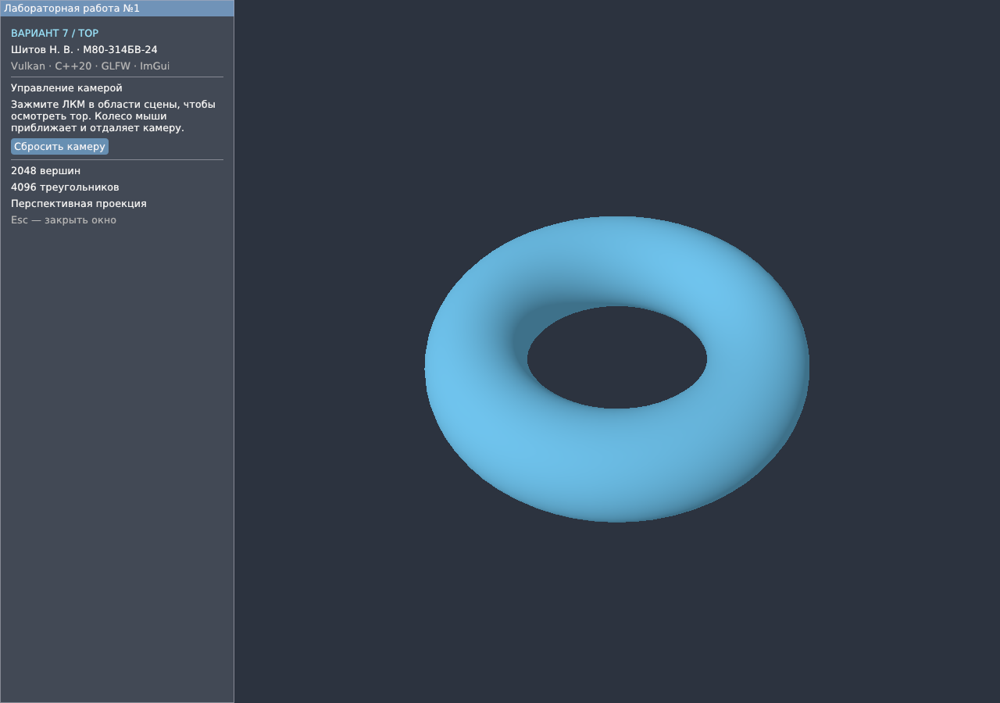
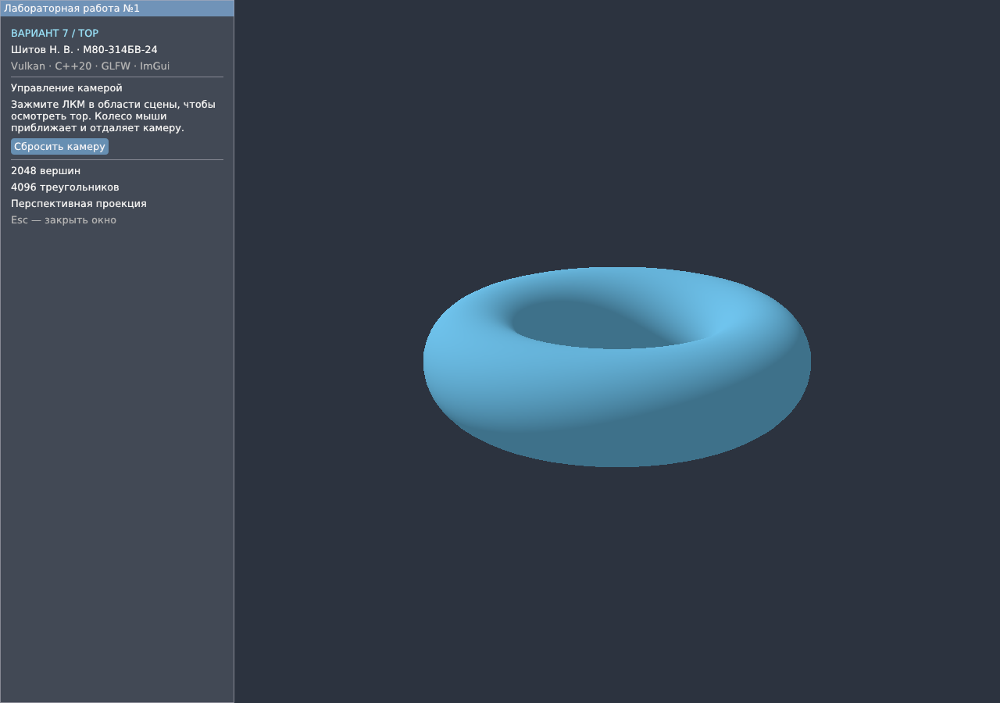

Цель работы — освоить построение простого трёхмерного объекта, проецирование на двумерную плоскость и работу с матрицами. Разработать интерактивное приложение на C++ с использованием Vulkan, GLFW и Dear ImGui.
Номер в списке группы P = 19, количество вариантов N = 12. Номер варианта: ((P − 1) mod N) + 1 = ((19 − 1) mod 12) + 1 = 7. Фигура варианта 7 — тор. Выполнено основное задание: построение и отрисовка одного тора с возможностью осмотра при помощи камеры.
Тор задаётся большим радиусом R = 1,4 и радиусом трубки r = 0,5. Ось симметрии совпадает с Y. Параметры u и v изменяются от 0 до 2π:
x = (R + r cos v) cos u y = r sin v z = (R + r cos v) sin u
Использована сетка 64 × 32: 2048 вершин, 4096 треугольников. Каждая ячейка разбивается на два треугольника, соседние индексы вычисляются по модулю числа сегментов. Оба шва замкнуты. Нормаль поверхности n = (cos v cos u, sin v, cos v sin u). У тора фиксированный синий цвет; простое диффузное освещение показывает объём поверхности.
pclip = P · V · (x, y, z, 1)ᵀ
P = [ c/a, 0, 0, 0; 0, −c, 0, 0;
0, 0, f/(n−f), fn/(n−f); 0, 0, −1, 0 ]
c = 1 / tan(FOV/2)
Матрица V строится функцией lookAt для орбитальной камеры. ЛКМ изменяет направление взгляда, колесо — расстояние до центра тора. P задаёт перспективную проекцию: FOV = 45°, n = 0,1, f = 100; a — отношение сторон области сцены. Матрицы хранятся по столбцам, в формуле записаны по строкам. Отрицательный знак Y учитывает экранную систему Vulkan; глубина после деления на w принадлежит [0; 1]. Буфер глубины с проверкой LESS скрывает закрытые части поверхности.
Вершины и индексы хранятся в VkBuffer, память выделяется через VMA. Матрица P·V передаётся в единственном uniform-буфере размером 64 байта и одном VkDescriptorSet. GLSL-шейдеры компилируются glslc в SPIR-V. VkPipeline задаёт формат вершин, растеризацию и проверку глубины; vkCmdDrawIndexed рисует тор. Затем ImGui выводит сведения о фигуре и подсказки управления.
Uniform-буфер обновляется после ожидания fence предыдущего кадра. Сборка, два ракурса камеры и изменение размера окна проверены на Linux с Mesa llvmpipe. Тест геометрии и матриц прошёл; Vulkan Validation Layers и проверка синхронизации не зарегистрировали ошибок. Логи находятся в report/checks/.

Рисунок 1 — тор в перспективной проекции. Слева отображаются сведения о фигуре и управление камерой.

Рисунок 2 — тот же тор с другого ракурса камеры. Геометрия, проекция и цвет фигуры сохраняются.
В работе освоены параметрическое построение тора, индексная отрисовка, матрица камеры и перспективная проекция Vulkan. Реализован осмотр одной трёхмерной фигуры с помощью мыши; буфер глубины обеспечивает правильное перекрытие поверхности.